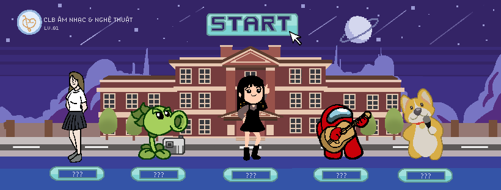

Câu lạc bộ Âm nhạc và Nghệ Thuáºt
Đại há»c Luáºt Hà Nội

“Một lần chạm là cả Ä‘á»i gắn kết, Âm nhạc Nghệ thuáºt chất keo cho cuộc sống.”
🌟 Câu lạc bộ Âm nhạc và Nghệ thuáºt - Trường Đại há»c Luáºt Hà Nội được
thà nh láºp và o năm há»c 2010 – 2011 với mục Ä‘Ãch tạo ra sân chơi cho các bạn
sinh viên có năng khiếu, muốn thể hiện niềm đam mê ca hát, biểu diễn âm
nhạc và xây dựng một cộng đồng nơi sinh viên có thể cùng nhau giải trÃ, giao
lưu, há»c há»i vá» lĩnh vực âm nhạc, nghệ thuáºt. 🌟
🌟Trải qua hơn 10 năm hoạt động,
Câu lạc bộ Âm nhạc và Nghệ thuáºt Trường Đại há»c Luáºt Hà Nội đã hoà n
thiện về nhiều mặt, thu hút được sự quan tâm từ nhiều bạn sinh viên và tham
gia biểu diễn trong rất nhiều hoạt động, sân chơi cũng như các sự kiện lớn nhỏ
trong và ngoà i trường, tiêu biểu như: Du ca; Chà o tân sinh viên; Liveshow
riêng; Các chương trình từ thiện nhằm hỗ trợ phần nà o những mảnh Ä‘á»i khó
khăn qua những tiết mục được dà n dựng công phu, đầy tâm huyết (điển hình
là chương trình “Thương”) … 🌟
🚀🚀 Khi đến với CLB Âm nhạc và Nghệ thuáºt Trường Đại há»c Luáºt Hà Nội,
các bạn sẽ cùng nhau rèn luyện và phát triển đam mê của mình trong một môi
trường năng động, với đa dạng các vị trà trên sân khấu như: vocalist, lead
guitarist, bassist, accord guitarist, drummer, pianist, dancer… Ngoà i ra, các
bạn có tà i năng vá» mảng truyá»n thông, háºu cần, design, quay phim, chụp ảnh,
edit video… có thể tham gia và o Ban Sự kiện để tạo ra những sản phẩm, ấn
phẩm sáng tạo, nghệ thuáºt nhất cho các sự kiện của CLB và của trường. Bên
cạnh đó, CLB luôn tạo ra các hoạt động đội nhóm, vui chơi ở bên ngoà i như:
cắm trại, thiện nguyện nhằm tạo cho các thà nh viên sự kết nối, cởi mở và tự
tin. 🚀🚀
🔥🔥 Còn chần chừ gì nữa? Hãy đăng ký tham gia cùng chúng mình ngay thôi nà o!🔥🔥
Ban Sự Kiện

“Các em nên nhớ, mình là người Ban Sự Kiện. Nếu quá nhiá»u deadline thì mình đi ngủâ€
Được xem là một mảnh ghép không thể thiếu trong CLB. Đây là Ban mang
trong mình sứ mệnh cao cả là gắn kết các ban chuyên môn và là xương sống
“chạy các sự kiện một cách trơn tru nhất”. Nếu bạn là một người yêu nhiếp
ảnh, chỉnh sá»a ảnh, clip, sá» dụng PTS, Ai,... hay có kĩ năng viết lách cân má»i
thể loại, hoặc mong muốn là người đứng sau má»i thà nh công của một chương
trình lớn thì hãy đến với Ban Sự Kiện nhé!
Ban Nhạc Cụ

“HLU biến nhạc cụ trở thà nh tà i sản mang đi thế chấp, Ban Nhạc Cụ biến nó trở thà nh đối tượng điá»u chỉnh của con tim”
Là một ban chuyên môn của CLB ANNT, Ban Nhạc Cụ là nơi tụ họp của
hợp của các tà i năng chơi các loại nhạc cụ khác nhau như Guitar, Piano, các
những sinh viên có niềm đam mê mãnh liệt với các loại nhạc cụ. Với sự kết
có thể tạo ra những mà n trình diễn đặc sắc nhất, trở thành 1 phần của Ban
loại Trống, Sáo,... Đây là ban chuyên môn luôn sát cánh cùng Thanh Nhạc, để
các thành viên còn có được cơ hội nâng cao chuyên môn, rèn luyện bản lĩnh
Nhạc cụ, bên cạnh cơ hội giao lưu, học hỏi và đứng trên các sân khấu lớn nhỏ, sân khấu và tiếp xúc với môi trường làm việc chuyên nghiệp.
Đội Múa

“Tiên tá» trên sân khấu, tiên tá»u trên bà n nháºu”
Để tạo nên bức tranh hoà n hảo thì Đội Múa là một mảng mà u đặc sắc. Đội
Múa mang đến một là n gió tươi mát, năng lượng từ sức trẻ cho đến những tiết
mục đầy chất lượng vá» cả “hình†và “ảnh†lẫn chuyên môn. Kỹ thuáºt đa dạng,
thần thái xuất sắc, Đội Múa luôn khiến cho khán giả phải trầm trồ khi mỗi lần
xuất hiện đều chiếm trọn Spotlight.
Đội Nhảy
“Nhạc thì luôn luôn Ä‘Æ¡n giản nhưng Đội Nhảy cứ make it complicated nên là mình cứ enjoy cái moment trên stage thôi”
Với chuyên môn đa dạng, phong phú và đầy mà u sắc, Đội Nhảy là nơi cho ra
đời những sản phẩm choreography chất lượng, được đầu tư kỹ lưỡng, tạo ra
những ấn tượng khó phai mỗi lần xuất hiện với một nguồn năng lượng rất dồi
dà o và một không khà vui vẻ, sôi động. Nếu bạn yêu thÃch một môi trường
đầy năng động, đầy “nhiệt” thì hãy đến với Đội nhảy nhé!
Ban Thanh Nhạc

“Chỉ có Thanh Nhạc mới là m chúng ta six nịne gần nhau hơn”
Đây là ban chuyên môn với các bạn có khả năng Ca hát, Beatbox, Rap,...với
đầy đủ và đa dạng các thể loại nhạc. Các thà nh viên sẽ luyện táºp thanh nhạc,
khả năng trình diễn để có thể tham gia Biểu diễn trong các hoạt động có sự
góp mặt của CLB. Để trở thà nh thà nh viên Ban Thanh nhạc, các bạn cần phải
có một và i yếu tố như: Có một giá»ng hát tốt, niá»m đam mê âm nhạc, Tư duy
cảm thụ âm nhạc tốt. Luôn tự tin và khả năng biểu diễn lôi cuốn. Hơn hết, đó
là sự chăm chỉ táºp luyện nâng cao chuyên môn. Váºy còn chá» gì nữa, hãy đến
với Thanh Nhạc chúng mình nà ooooooo.